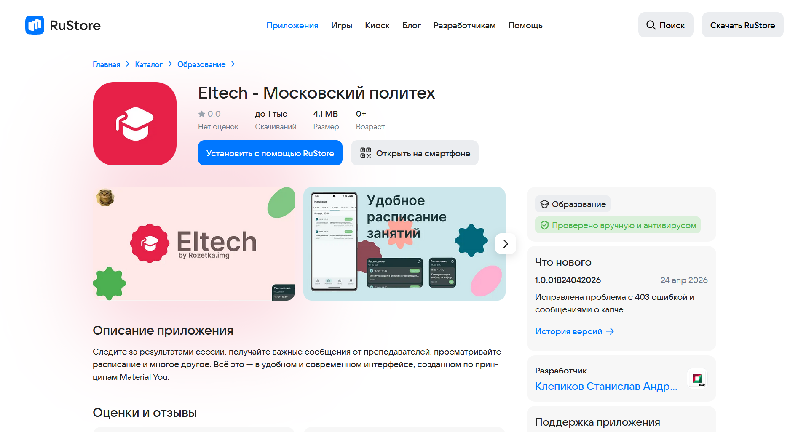

О проекте
Актуальность:
На сегодняшний день в Московском Политехе отсутствует полноценное мобильное приложение. Студенты вынуждены пользоваться неудобной мобильной версией веб-сайта для просмотра расписания, успеваемости и учебных материалов. Проект Eltech решает эту проблему, предоставляя удобный и быстрый инструмент для взаимодействия с цифровой средой университета.
Цель:
Создать полноценное кроссплатформенное мобильное приложение для удобного доступа к информации Московского Политеха со смартфонов.
Задачи:
- Перенос основного функционала веб-версии ЛК Московского Политеха в формат мобильного приложения.
- Перенос текущего функционала на архитектуру Kotlin Multiplatform (KMP) для создания общей библиотеки и SDK.
- Разработка пользовательского интерфейса с дизайном, полностью соответствующим визуальному стилю Московского Политеха.
Ожидаемые результаты:
- Запуск единого приложения для платформ iOS и Android.
- Получение статуса официального клиента университета
Принципы разработки
- Итеративность — проект развивается постепенно (первичная версия представлена в RuStore, в данный момент идет активный перенос функционала на KMP для последующего кроссплатформенного запуска).
- Открытость — использование open-source подхода (публичный репозиторий на GitHub) для прозрачности процесса разработки.
Приложение в RuStore
